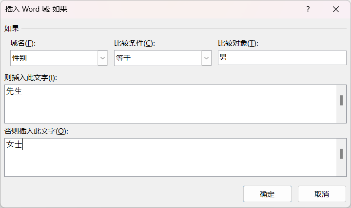
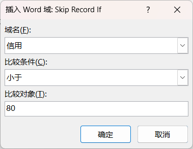
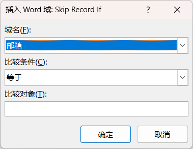
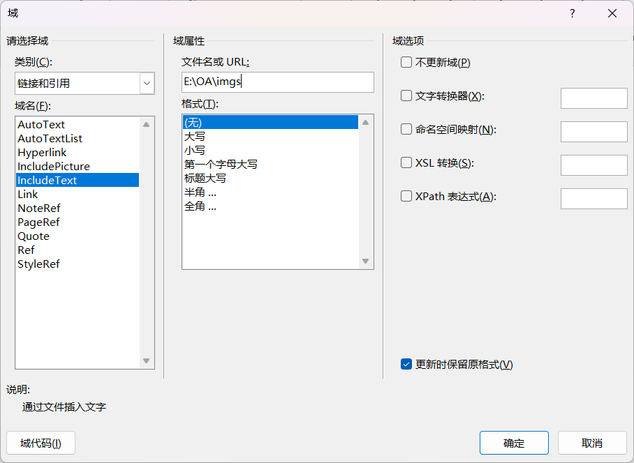
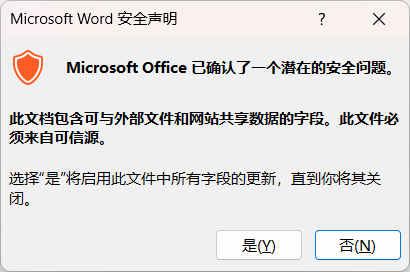

邮件
Mailings
- 内容 Contents
- 邮件 Mailings
邮件 Mailings
- 综合使用"开始邮件合并"和"编写和插入域"完成邮件的批量编辑
- 将一个 Word 文档与一个 Excel 数据源结合起来，快速生成一系列内容相同而收件人不同的输出文档的过程。相同的内容来自主文档，变化的内容来自数据源。
- 利用"规则"对数据进行区别操作，如根据性别调整称呼；或者过滤掉某些数据：信用低于3000的客户不在邀请范围等等

使用规则"如果...那么...否则"加入称呼

使用规则"跳过记录条件"过滤掉信用小于80的记录

使用规则"跳过记录条件"过滤掉信用为空的记录
邮邀请函
- 点击下载 工作通讯录.xlsx
、会议邀请函.docx
-
打开会议邀请函，"邮件" → "开始邮件合并" → "信笺"
点击"选择收件人"选项，在下拉列表中选择"使用现有列表…"，在弹出的"选取数据源"对话框中选取下载的工作通信录文件并指定"普通信笺"工作表
在邀请函相应的位置，如称呼处，"编写和插入域" → "插入合并域"，选择工作通信录中相应的字段
利用"预览结果"检查是否有误
点击"完成并合并" → "编辑单个文档…" → 在"合并到新文档"对话框的"合并记录"中，选中"全部"并确定，系统便自动合并生成新文档
团学邀请学生家长参加年度迎新晚会，男家长显示为先生，女家长显示为女士
英语等级考试中心给考生发放CET-4考核成绩通知，通过显示为pass
教秘给上计算机应用基础的老师发送机房就绪通知
财务给在职的员工发送工资条
高级使用 - 图片
- 需要配合文档部件中的域来实现，并使用绝对路径或相对路径拼接处完整的图片路径
- 环境介绍
- 准备图片：图片最好放在一个文件夹内
- 准备数据源文件：Excel文件；仅仅给出图片的文字名，如gl.png，没有给出路径，需要后面修改域代码完成拼接
- 准备邮件文件：Word文件，并编辑好文案
- 注意：以上文件位置不做要求，尽量放在一起
- 使用步骤
- 打开邮件文件，定位光标，插入"文档部件" → "域"，选择包含图片的域，并指定其路径；系统对外部的操作会给出警告信息，确认即可

插入图片域

系统提示
- 按Alt + F9切换到域代码编辑状态，显示为：{INCLUDETEXT "E:\\OA\\imgs" \* MERGEFORMAT }
- 将光标定位在路径最后面imgs处，切换回"邮件"，插入图片域，此时的图片对应的域代码为：{INCLUDETEXT "E:\\OA\\imgs\\{MERGEFIELD 头像}" \* MERGEFORMAT }
- 按Alt + F9，退出域代码编辑状态，按F9刷新，检查图片的加载情况
- 后续的完成合并同前；如果图片没有更新，请按F9
- 保存
常见域的格式调整
| item |
desc |
demo |
| \# 0.00 |
指定小数位数 |
12→12.00 |
| \# ￥####0.00 |
增加货币符号并指定宽度 |
2→￥ 2.00 |
| \@ YYYY-MM-DD |
数字显示 |
7/1/1995→1995-07-01 |
| \@ EEEE年O月A日 |
中文显示 |
7/1/1995→一九九五七月一日 |